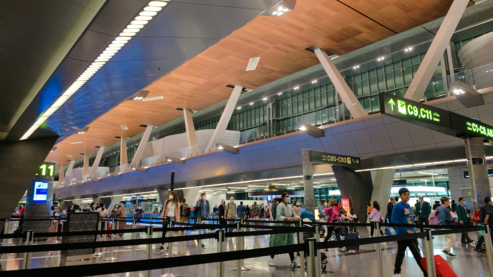
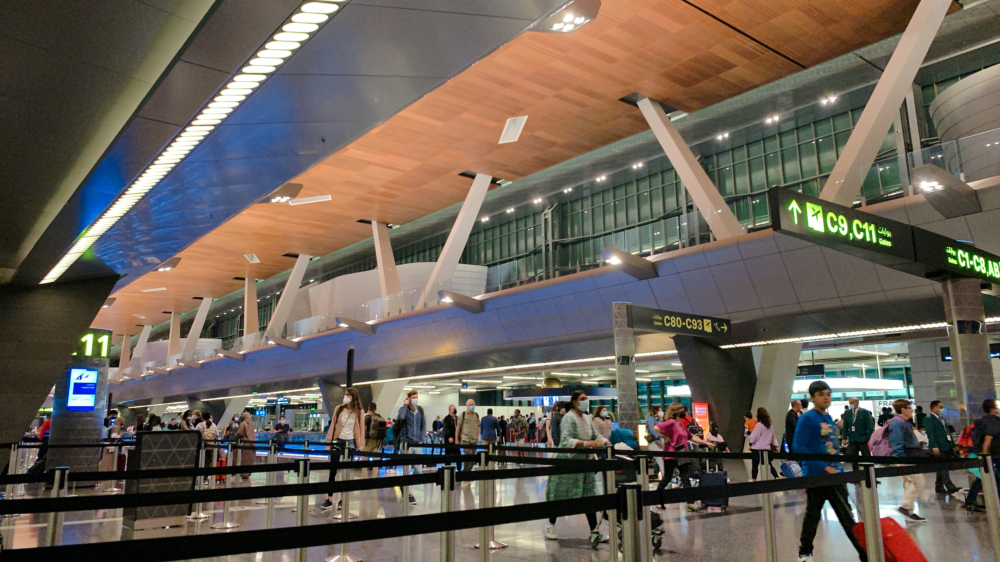
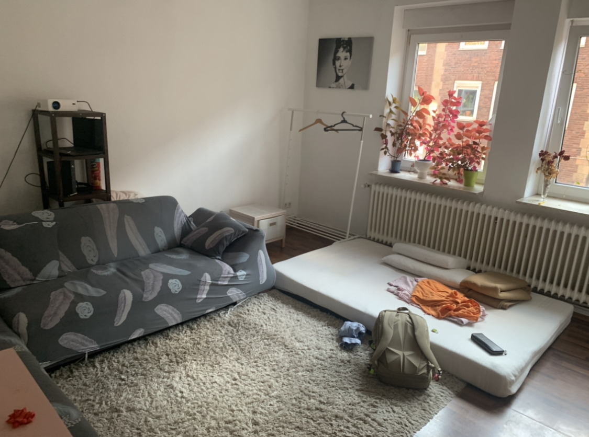

ドイツ滞在の記録
現在ドイツの大学院にいます. 内部モデル理論を研究しています.
31.08.2022 und 01.09.2022
羽田空港から出発しました. 直行便が現在40万円超えるのでカタール航空を利用して数回の乗り継ぎで行きました.
東京, バンコク, ドーハ, フランクフルト, ミュンスターの順で行きました.

バンコク, スワンナプーム空港で乗り継ぎの時に撮った写真.
タイ語で書かれたコアラのマーチ. 値段は日本と同じくらいだった記憶.
 

ドーハ, ハマド国際空港の様子. 空港はかなり大きかった. 8000円ぐらい課金してラウンジを利用した. かなり快適だった. シャワーを浴びることができます.

フランクフルトについたときの様子. 空港内だと日本とあまり変わらない気がする. もちろん日本語は通じない.

フランクフルトからミュンスターへ行くときの上空の様子. ぱっと見は鹿児島の上空と変わらない気がしたが, 細かい部分は日本と違うように思われる.
まず住宅の形が違う. この写真には写っていないがあちこちに風力発電機があった.

ミュンスターについた時の様子. 午前10時半ごろ. 預けていた手荷物は18時に着くと言われる. まだ住む
場所どころかこの日泊まる場所すらなかったので荷物は明日回収することにする. ひとまず大学へ向かう.
バス停が全くわからず7キロあるリュックを背負って3, 4kmほど歩く. フライトの疲れも相まってかなりしんどい.
Internatinal Stundet Officeに相談しに行く. かなり粘ったところ二か月の一時的な滞在場所であるが無事見つかる. 生存.
ドイツではシェアアパートメントのことをWGというらしい. ミュンスターで一番大きい駅Hbfの裏にあるホテルに泊まった.
02.09.2022
ホテルにて起床. このホテル, アメニティが無い. めちゃくちゃ喉が渇いたり, 肌が乾燥したりする. 湿度が低いせい?? 水道水は普通に飲める. 硬水はまずいイメージがあったがそうでもない??
ホテルで朝食をとる. 昨日夜ご飯を食べてなかったのでその分かなり食べた. ハム, チーズ, パンがかなり美味しい.


街並みの様子

空港に荷物を救出しに行く. 受付に取りに行くも空港内のシステムには登録されてないと言われる. 焦る.
AirTagで荷物を探したところ空港内にあることがわかり探してもらった結果見つかった. 荷物検査はかなり緊張したが無事終わる. 再び中心街へ戻る. 4時間ぐらい時間を駅で潰す.


入居した部屋. ここに二か月住む. とりあえずジャケットをかける. 疲れたので寝る.
03.09.2022
今日は携帯やタブレットを充電するプラグを買いに行く.

持ってきた革靴. 残りは船便でドイツに来ます. 今日はCrockett&Jones AUDLEYを履いた. 非常に良い靴です.

朝の街並み.

無事買えました. タイプC用も買った.
ドイツ人みんな身長高い. 男性女性ともに180cmオーバーが当たり前な印象. 190cmぐらいも普通にゴロゴロいる. 自分(174cm)より小さい人を見つけることが難しいぐらい.
服装の傾向はなんとなくわかってきた. 男性はトートバッグを使わないは本当っぽい. 手ぶらも多い. 残念. パーカー, ジーンズ, スポーティなシューズって感じの組み合わせが多い.
04.09.2022
眠くてダラダラしていた. 寝過ぎて頭が痛い. ぼやきを改修する. 数学に集中したいがすることがいっぱいだったりで困る.
ドイツビールを買いました. よくわからなかったので適当に3本買った. あとはおつまみのハム. これがめちゃくちゃ美味しい.


色々やることをやる. 研究の方も進めたい.
05.09.2022
ちゃんと早起きしてやることをやる. そのあとは数学をして一日過ごしたい. 朝ご飯はコーヒーとパン. パンはこれで70円ぐらい.

パンがとても塩辛かった. もう買うことはない. ルームメイトがキッチンを掃除したときにショートしたらしく, キッチンが昨日から使えない. お腹空いてどうしようも無くなったら外食にするかも.